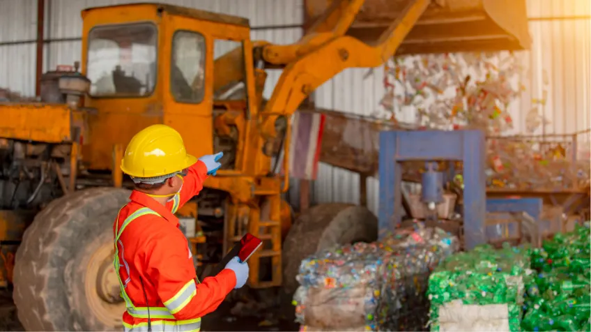
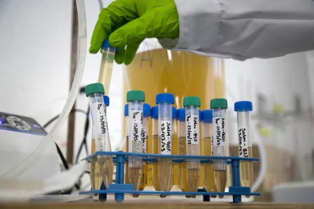

Dal 1986. Ingegneria e Ambiente.
Il Gruppo Tecnitalia è nato per prestare consulenza tecnica e servizi alle imprese. Si è sviluppato progressivamente dal 1986 dedicandosi a numerosi settori di interesse. I primi sono stati la sicurezza, con particolare riferimento all’antincendio e all’analisi del rischio per le attività soggette al DPR 175/88 (Direttiva Seveso) e il servizio di consulenza tecnica fornito alle Compagnie di Assicurazione.
Successivamente è stato avviato anche il settore ambientale che, facendo seguito al recepimento nazionale delle Direttive Comunitarie in materia ed ai connessi obblighi per le imprese, si è concentrato sulle problematiche di recupero delle aree industriali dismesse con particolare riferimento alla bonifica dei terreni contaminati, delle acque di falda e reflue e alla gestione dei rifiuti.
Di recente sono state consolidate anche le competenze per far fronte alla domanda di certificazione delle imprese (ISO 9000, ISO 14000, EMAS) e dei prodotti (marcatura CE degli aggregati) con specifico riferimento al settore del riciclaggio dei rifiuti.
Grazie all'ormai trentennale esperienza, supportata da studio e ricerca costanti, offriamo un servizio completo. Dalla fine degli anni '90 ci siamo specializzati nel recupero delle aree dismesse e nelle bonifiche.
Tematiche Ambientali (Cosa facciamo):

Nata agli inizi degli anni 2000, Tecnitalia Servizi opera prevalentemente nel settore ambientale per far fronte alle esigenze operative e di indagine non progettuale dei nostri clienti.

I nostri principali interventi di bonifica e riqualificazione.